Interaction Design
Matthew Barnes
Checklist 4
Book 6
HCI Theory 7
With vs. Through 7
Foci of interactive development 7
Types of theories 8
Affordances 8
Norman Model of Interaction 9
Situated actions 10
Ortony’s model of emotional design 10
Distributed cognition 11
Fogg’s behaviour model 11
Data Gathering 12
Research questions vs ‘Instrument’ questions 12
Key steps in data gathering 13
Breadth vs Representativeness 13
Pilot studies 15
Triangulation 15
Interviews 15
Questionnaires/Surveys 16
Observation 17
Hybrid methods 17
Experiments 18
Data Analysis 18
Quantitative - Measures 18
Quantitative - Alternative representations 18
Qualitative - Coding 19
Usability, UX and Accessibility 20
What’s the difference? 20
Enforcing usability, UX and accessibility 20
Universal design 21
Interfaces 21
Past 22
Present 22
Future 22
Qualitative Methods 23
Contextual inquiry 23
Qualitative methods 23
Interviews 23
Rapid Ethnography 24
Diary Studies 24
Cultural Probes 24
Technology Probes 24
Qualitative Analysis 25
Traditional experimental theory 25
Grounded Theory 25
Coding 25
Designing for the Web 26
Motivation 26
Layout 26
Above and below the fold 26
Rule of thirds 27
Responsive design 28
Break-point design 28
Semantic web 28
Web page elements 29
Interaction 29
Metaphors, Models & Assumptions 29
Conceptual models 29
Interface metaphors 30
Material metaphors 30
Interaction types 31
Instructing 31
Conversing 31
Direct manipulation 31
Interface type 31
Prototyping 31
What is a prototype? 31
Why do we prototype? 32
What to look out for in prototyping 32
Low vs high fidelity prototyping 32
Low fidelity 32
High fidelity 34
Low vs High 34
Personas 34
Accessibility 35
Terminology 36
Why should I care 36
Who else benefits 36
Ordinary people 36
STREET 36
Scenarios and personas 37
Cognition 37
Cognition 38
Attention 38
Perception 38
Memory 38
Learning 38
Reading, speaking and listening 39
Problem-solving, planning, reasoning and decision-making
product. 39
Theoretical frameworks 39
Information Processor Model 39
Distributed cognition 39
External cognition 40
Evaluation 40
Inspections 40
Heuristic evaluation 40
Predictive methods 41
Experiments + Statistics 101 41
Types of evaluation 42
Controlled settings involving users 42
Natural settings involving users 42
Settings not involving users 43
Values & Value Sensitive Design 43
Types of values 43
Why consider values 44
Research & Design Ethics 44
Milgram experiment 44
ACM Code of Ethics and Professional Conduct 44
Ethics in Interaction Design 45
Avoiding bias 45
Recruiting participants 45
Presenting findings 45
Ethics in FEPS (ERGO2) 45
Participatory Design 47
Persuasive Design & Behaviour 47
Step 1: Behaviour identification 47
Step 2: Change identification 48
Step 3: Intervention content identification 48
Behaviour Change Techniques 49
Implementation intention 49
Step 4: Understanding perspective 49
Step 5: Evaluation 50
TL;DR 51
HCI theory 51
Data Gathering 53
Data Analysis 55
Usability, UX and Accessibility 55
Interfaces 56
Qualitative Methods 56
Qualitative Analysis 56
Designing for the Web 57
Metaphors, Models & Assumptions 58
Prototyping 58
Accessibility 58
Cognition 59
Evaluation 60
Values & Value Sensitive Design 61
Research & Design Ethics 61
Participatory Design 62
Persuasive Design & Behaviour 62
Checklist
-
Below are the lectures I’ve converted to notes and
the lectures I’m going to convert to notes:
|
Lecture name
|
Done?
|
|
HCI Theory I
|
Yes
|
|
Data Gathering I
|
Yes
|
|
Data Gathering II + Data Analysis
|
Yes
|
|
Usability, UX and Accessibility
|
Yes
|
|
Interfaces: Past, Present & Future
|
Yes
|
|
Qualitative Methods I & II
|
Yes
|
|
Qualitative Analysis I & II
|
Yes
|
|
Privacy, Consent & Personal Data
|
Not on the exam
|
|
Designing for the Web I & II
|
Yes
|
|
Metaphors, Models & Assumptions
|
Yes
|
|
HCI Theory II
|
Yes
|
|
HCI Theory III & Prototyping I
|
Yes
|
|
Prototyping II
|
Yes
|
|
Accessibility I: Overview
|
Yes
|
|
Accessibility II: Designing for everyone
|
Yes
|
|
Cognition
|
Yes
|
|
Evaluation I: Intro, Stats &
Heuristics
|
Yes
|
|
Evaluation II: User Testing
|
Yes
|
|
Values & Value Sensitive Design
|
Yes
|
|
Research & Design Ethics
|
Yes
|
|
Participatory Design
|
Yes
|
|
Persuasive design and behaviour
|
Yes
|
Book
-
The core text of this module is:
HCI Theory
With vs. Through
-
We can interact with technology and through
technology
-
Interaction with technology means that we interact directly with the
technology by doing some physical action.
- Examples:
-
pressing a key on the keyboard,
-
pressing a physical button on a device
-
Interaction through technology means that we use the technology as a tool to
communicate with some other person/service.
- Examples:
-
writing a message on WhatsApp
-
poking someone on Facebook
Foci of interactive development
-
You can scope your interface focus on different areas of
the system:
|
Foci name
|
Description
|
Things you’d develop where this foci is
most prevalent
|
Things you’d look out for
|
|
1. Hardware
|
The underlying hardware of the system.
|
Motherboard, faster processor
|
Is it safe?
Could it be more efficient?
Is memory handled correctly?
|
|
2. Programming task
|
The actual software of the system.
|
IDE, compiler
|
Is it optimal?
Is it abstracted well?
How many platforms does this work on?
|
|
3. Terminal
|
What is used by the user to interact with the
system.
|
Keyboard, mouse, touch screen (almost any kind
of peripheral)
|
Is it comfortable to use?
Is it awkward to use?
Does it do the job well?
|
|
4. Interaction dialogue
|
How the user interacts with the system.
|
Office software, video games, washing machines,
ATMs, pretty much anything that is used by one
person at a time.
|
Is it easy for the user to use?
Does the user instinctively know what to
do?
Do they get stuck on what to do?
|
|
5. Work setting
|
How a group of users interact with the
system.
|
Cloud storage service (like dropbox), Intranet
software
|
Does the synergy work alright?
How well does it work with different network
types?
|
Types of theories
-
When we think about designing a system’s interface,
there are three theories that we can follow:
|
Type of theory
|
Description
|
|
Classical
|
-
Using psychology and predictive methods to
determine how people will interact with our
system
|
|
Modern
|
-
Uses analytic tools to measure behaviour
patterns, then uses that to design system
interfaces
-
Focuses more on how the user uses the
system and not what’s going on inside
their heads
|
|
Contemporary
|
-
Like modern, but it takes it a step further
and counts things in like culture and use in
everyday life.
|
Affordances
-
Affordances are uses / services that are offered by the
system to the user.
- Examples:
-
The ability to send email is an affordance by Gmail to the
user.
-
File management is an affordance by an operating system to
the user.
-
There are different types of affordances:
|
Type of affordance
|
Description
|
Example
|
|
Instrumental
|
A way in which a person can use the tool to
change the world in some way.
This can be split up into
“Handling” and
“Effecter”.
|
Look at handling and effecter
|
|
Handling
|
A way for the user to interact with the tool
itself.
|
Using a scroll bar on an application only
affects the tool itself, there’s no
further purpose for it.
|
|
Effecter
|
A way in which a tool can bring about a change
in another object.
|
Calling someone from your phone changes the
state of their phone from idle to ringing.
|
|
Aggregation
|
Two systems can combine to create a new
affordance.
|
A mobile phone with bluetooth hooking up with a
headset to create a personal music player.
|
|
Learning
|
Provides information for the user to read and
learn how to use the system.
|
A USB icon above a USB port, so the user knows
that it’s supposed to be a USB port.
|
|
Maintenance
|
Allows the user to maintain the system.
|
A settings window, or the ability to change the
battery of a mobile phone.
|
Norman Model of Interaction
-
This model models interaction like a cycle:
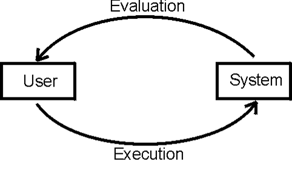
-
There are seven steps that loop in the Norman Model of
Interaction:
-
Execution includes:
-
Establishing the goal
-
Forming the intention
-
Specifying the action sequence
-
Executing the action
-
Perceiving the system state
-
Interpreting the system state
-
Evaluating the system state
|
Step
|
Example
|
|
Establishing the goal
(What we want to do)
|
“I want to know how many files are in
this folder”
|
|
Forming the intention
(Why we want to do it)
|
“I’m going to do this by using a
bash command”
|
|
Specifying the action sequence
(How we’re going to do it)
|
“I’m going to type in find . -type f | wc -l”
|
|
Executing the action
(Doing it)
|
*types in find . -type f | wc -l and presses Enter*
|
|
Perceiving the system state
(What is the result of the action)
|
“The command returned the number
4”
|
|
Interpreting the system state
(What does the result mean)
|
“That means there are 4 files in this
folder”
|
|
Evaluating the system state
(Did the result meet the goal)
|
“I now know how many files are in this
folder”
Loop back to the first step if the user
isn’t satisfied
|
Situated actions
-
Situated actions is the notion that people do things based
on context.
-
For example, you might have two devices that look exactly
the same, but one’s purpose is completely different to
another’s purpose.
-
If you asked someone to use the first device, then use the
second device, they will most likely attempt to use the
device differently, because they know the devices fulfil two
different purposes.
-
Another example would be using the same device in two
completely different scenarios. If someone is drinking and
gets drunk, are they going to care about a notification from
their quit smoking app compared to someone relaxing at
home?
Ortony’s model of emotional design
-
There are three parts to this model:
|
Part
|
Description
|
Example
|
|
Visceral
|
This refers to parts of the brain that respond
to things in the physical world, usually
emotionally.
In terms of interaction, this would refer to
products that feel / sound / look good.
|
Any design that makes you feel good, like
Material Design, Apple’s design,
etc.
https://material.io/
https://developer.apple.com/design/human-interface-guidelines/macos/overview/themes/
|
|
Behavioural
|
This refers to parts of the brain that performs
tasks.
In terms of interaction, this would refer to
components that you can use and are intuitive
(e.g. buttons, check boxes, switches etc.)
|
Bootstrap
https://getbootstrap.com/
For a better example, try some of these
themes:
https://themes.getbootstrap.com/
|
|
Reflective
|
This refers to parts of the brain that
contemplate things and reflect upon
things.
This is more high-level than the others in
terms of interaction. This refers to interaction
choices that make the user reflect upon what
they’re doing.
|
This light displayed on the cloud from a coal
plant:

When people see the light getting bigger, they
know they’re using more energy and harming
the environment more. They reflect upon this,
and might decide to use less energy.
|
Distributed cognition
-
Distributed cognition says that what a person does
doesn’t just start and end with what they remember;
they use other resources too, like artefacts and their
environment, which are all encapsulated into one
“cognition”.
Fogg’s behaviour model
-
The Fogg Behavior Model shows that three elements must
converge at the same moment for a behaviour to occur: Motivation, Ability, and Trigger. When a behaviour does not occur, at least one of those
three elements is missing.
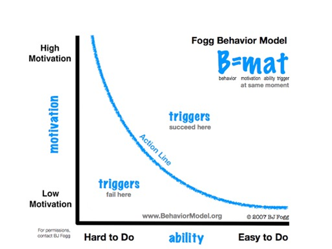
-
For example, if someone is really motivated and it’s
easy to do, the behaviour will occur (they’ll
definitely do it).
-
If someone isn’t motivated and it’s really hard
to do, the behaviour will not occur (they won’t do
it).(basically the Interaction Design module)
-
An example of an application of this model is a smoking
app:
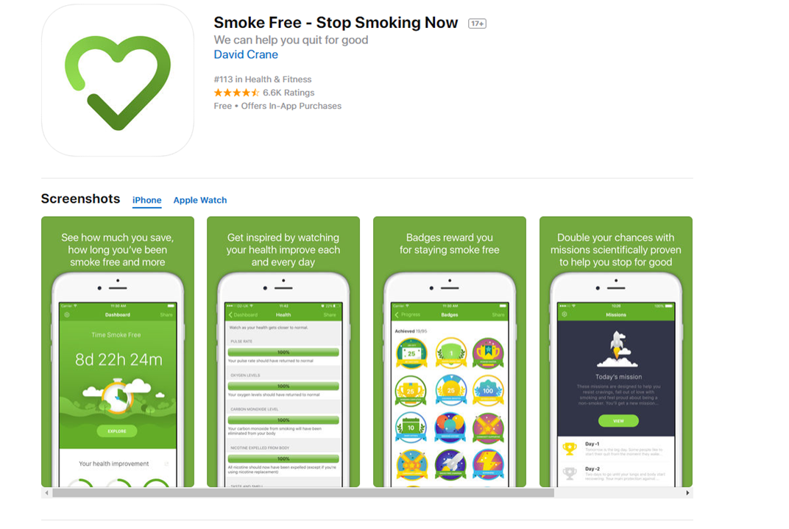
-
This smoking app performs “gamification” to
increase motivation to stop smoking and continue using the
app.
-
With this model, the higher the motivation, the higher the
likelihood of the behaviour occurring.
Data Gathering
-
When gathering data, you should first evaluate what the problem actually is and what the outcome needs to do.
-
You must collect data that is sufficient, accurate and
relevant.
-
Remember, we want to solve a problem. We don’t want
to create more problems.
-
Identify what works and what doesn’t work.
-
Is your current design good enough yet?
-
When collecting data, you can use a variety of
methods:
- Interviews
-
Questionnaires
-
Observations
-
Cultural probes
-
Literature reviews → Leverage existing data
Research questions vs ‘Instrument’ questions
-
Research questions are questions like “What do people
understand about their
home energy use?” or
“What factors reduce productivity in the work
place?”
-
Instrument questions are questions like “What are some
things you know about “energy use””?
-
Research questions are the questions we want to answer
(questions we need answers to).
-
Instrument questions are the questions that we ask other
people, usually our target audience.
-
Basically, we need to break up a research question into
instrument questions.
-
With the answers to the instrument questions, we can
(hopefully) answer the research questions.
-
We should not ask research questions in
questionnaires!
Key steps in data gathering
-
What questions do we need to answer?
-
How will we analyse the data that’s collected?
-
Determine population (how many people)
-
Determine sampling (what type of people)
-
Professionally, clearly, ethically
Breadth vs Representativeness
-
In qualitative research, we want answers that are more
specific, hence we sample for breadth of experience.
-
In quantitative research, we want to find results that represent the
best interests of our whole audience (or the majority of
them), so we aim for a sample that is representative of the population of interest.
-
Here, we have our whole population of interest:
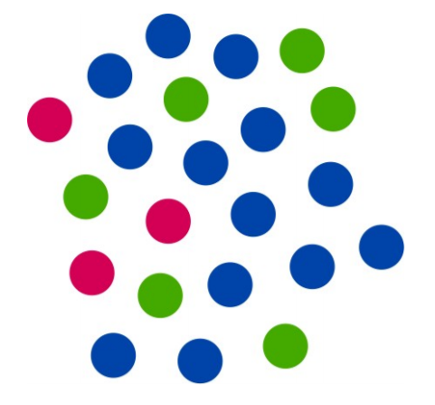
-
We can’t interview them all. We need to take a
sample. There are different kinds of samples:
|
Type of sample
|
Description
|
Illustration
|
|
Stratified
|
You use the ratio of the different kinds of
people to scale down your sample. For example,
most of the population are blue, so most of our
sample are blue.
|

|
|
Random
|
Randomly pick people.
|

|
|
Breadth (Qualitative)
|
Keep an equal number of different kinds of
people. In other words, the equivalence classes
of your sample are all the same size.
|

|
|
Convenience
|
You just interview the people who are most
convenient to talk to.
|

|
|
Snowball
|
You start off with a normal sample, like
convenient, and then you use their connections
to reach more people in the population, e.g.
“be sure to tell your friends and family
about us”
|

|
-
Remember, big samples don’t necessarily mean a good
sample, because you may sample the wrong people.
-
For example, if you wanted to research how older
generations use technology, you wouldn’t post an
interview on Twitter because you’d get the wrong
sample.
Pilot studies
-
A pilot study is a small study that you do before the main
study.
-
You do this to make sure that your study will work on a
bigger one.
Triangulation
-
Triangulation refers to combining data from different data gathering methods.
-
You’re going to get data that differs slightly. You
can’t assume all of them are 100% true. You’re
going to have to get the “mid-way point” of all
the data.
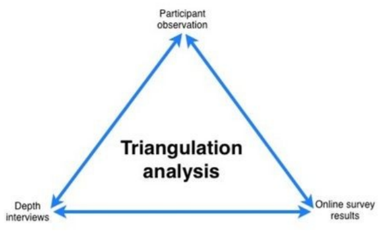
-
A good analogy of triangulation is coming up with a line of
best fit. You’re combining a bunch of different data
points to get one approximate (yet accurate) model.
Interviews
-
There are four types of interview:
|
Type of interview
|
Description
|
|
Unstructured
|
No script. It’s good for data (is rich),
and is steered by both parties. It’s more
like a conversation. This kind of interview
can’t be repeated, though.
|
|
Structured
|
Stick to the script. It can be repeated, but it
might miss good details (lacking in
richness)
|
|
Semi-structured
|
Use the script, but we can wander off on
tangents that seem interesting or useful. The
halfway point between unstructured and
structured.
|
|
Focus group
|
A group interview.
|
-
There are also two kinds of questions:
|
Type of question
|
Description
|
|
Closed
|
Has a discrete set of possible responses, for instance yes/no, a number or a choice
from a list. Used for quantitative data.
“Do you use an umbrella or a
raincoat?”
“How many hours of TV do you watch a
day?”
“Do you use this product every
day?”
“Is Sword Art Online the best
anime?”
|
|
Open
|
No predetermined answers. Usually answered in a
sentence or paragraph. Used for qualitative
data.
“How do you feel about climate
change?”
“What do you think about JoJo’s
Bizarre Adventure?”
|
-
Long questions
-
Jargon and complex language
-
Leading questions or assumptions
-
Unconscious biases e.g. gender stereotypes
-
Instead of asking “Why …?”, ask
“What are the reasons that …?”
instead
-
When running an interview, remember these few things:
-
Intro: Introduce yourself, explain goals and process, reinforce
right to stop/leave, ask to record, get consent
-
Warm up: Make first questions easy, non-threatening
-
Main body: Present questions in a logical order
-
Cool off: A few easy questions to defuse tension at the end
-
Closure: Switch recorder off, signal end, thank interviewee,
debrief
-
Output:
-
Notes; on the protocol itself, or plain paper
-
Audio recording
-
Other props/materials, like drawings, timelines,
lego?
Questionnaires/Surveys
-
Question order can be important – Priming, learning
and consistency effects
-
Different versions for different populations –
Language, locale, expertise
-
Provide clear instructions
-
Avoid very long questions
-
Decide whether phrases will be all positive, all negative
or mixed.
-
To get good responses from questionnaires, you
should:
-
Make the purpose clear
-
Promise anonymity ← If you can!
-
Offer a short version for people in a hurry
-
Include a return envelope (Stamp / freepost) if
mailed
-
Provide an incentive
-
40% response is good; 20% is often acceptable
-
You might decide to weight responses during analysis if
response is skewed
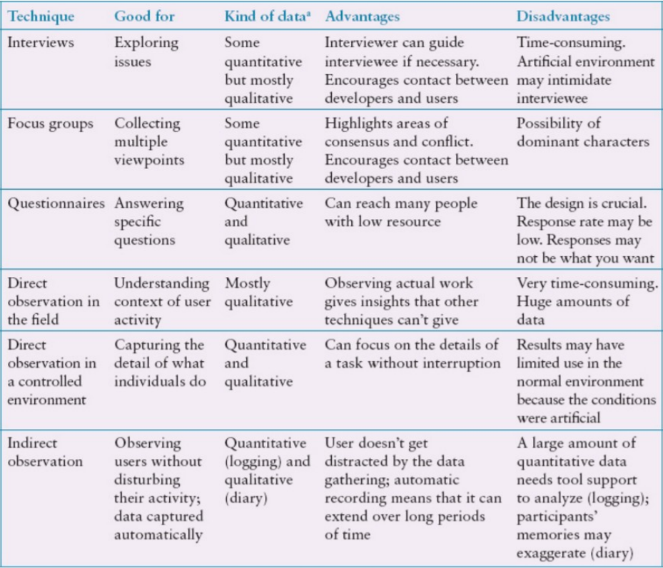
Observation
-
Observing is where you observe a working system in
use
-
Covered more deeply when we talk about Evaluation
-
Quantitative or Qualitative
-
In the field or in a controlled setting
-
Direct: Directly observe what’s happening
-
Indirect: Use instrumentation (e.g. web analytics, click tracking,
screen recorder)
Hybrid methods
-
There are a bunch of unique methods that can be used in
interviews:
|
Hybrid method
|
Description
|
|
Think-aloud
|
Ask someone to explain what they’re doing
while they’re trying to use a
system.
|
|
Wizard-of-Oz
|
Get someone to use a prototype system that they
think is autonomous, but is actually controlled
by someone else.
|
|
Speculative design
|
Propose possible design options to people to
prompt discussion.
|
Experiments
-
An experiment, like in science, is used to test a
hypothesis.
-
You can do experiments in a controlled environment (like a
lab)
-
Or you can do it in the “wild” (like Google
Analytics)
Data Analysis
-
Once you get your data, how do you analyse it?
Quantitative - Measures
-
There are 5 measures with quantitative data:
|
Measure
|
Description
|
|
Mean
|
The true average of all of the data
points
|
|
Median
|
The middle data point when sorted
|
|
Mode
|
The most often data point
|
|
Range
|
The highest data point - the lowest data
point
|
|
Standard deviation
|
The measure of spread from the mean, in other
words, how spread all the data points are from
each other
|
Quantitative - Alternative representations
-
There are lots of representations of data, like bar charts,
histograms, line charts etc.
-
Sometimes you can’t really see a pattern until you
use the right representation.
-
For example, we could gather data to see how many errors
are made in a software firm:
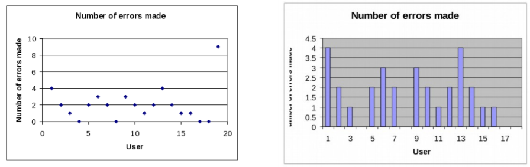
-
No patterns here... how about we try a frequency
graph?
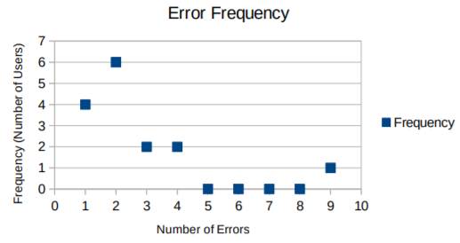
-
Now it’s obvious that most programmers only make 4
errors at best. There’s one guy who made 9 errors, but
that’s just one anomalous result; it doesn’t
represent the majority.
Qualitative - Coding
-
Coding refers to labelling parts of the qualitative data,
which abstracts the important parts.
- Example:
|
Qualitative data
|
Coding key
|
|
“It’s hard to find the time to get to the gym; sometimes I mean to go after work, but I don’t always make
it.”
“My schedule is quite hectic, it’s hard to fit
exercise into my routine.”
“I try to get some exercise by walking the kids to school in the morning; unless it’s raining! Then we take the
car.”
|
Time
Place
Other Commitments
|
Usability, UX and Accessibility
What’s the difference?
-
Usability is a quality attribute that assesses how the
interface is:
-
Efficient to use
- Effective
- Easy to use
-
Easy to learn
-
Easy to remember
-
“User experience” (or UX) encompasses all aspects of the end-user's
interaction with the company, its services, and its
products.
-
Accessibility: Usability of a product, service, environment or facility
by people with the widest range of capabilities
-
Usability: easy to use ? e.g.
-
Learnability: first time use
-
Efficiency: speed, effort
-
Memorability: re-use
-
Errors: number, severity, recoverability
-
Accessibility: Who can use it?
-
User Experience: e.g.
- Usability
-
Accessibility
- Utility
-
Satisfaction (including feelings/emotions)
Enforcing usability, UX and accessibility
-
Typically, an accessible website:
-
is perceivable and interactable with alternative devices
-
can be navigated easily and effectively, independently of the modalities used
-
is easily understandable
-
The World Wide Web Consortium (W3C) produced Web Content
Accessibility Guidelines (WCAG), divided into four
principles:
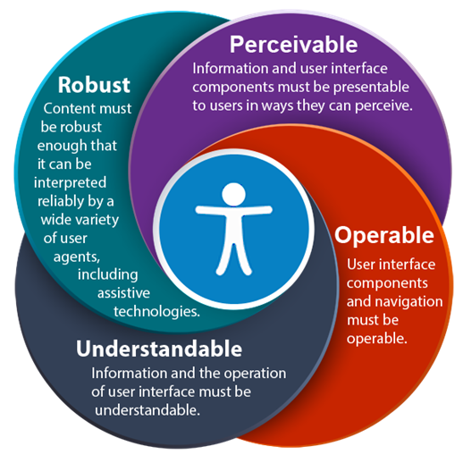
Universal design
-
Universal design includes:
-
Equitable
-
Avoid segregating or stigmatizing users
-
accommodating preferences and abilities.
-
easy to understand, regardless of experience, knowledge,
language skills
-
effective regardless of ambient conditions or sensory
abilities.
-
minimizes hazards and adverse consequences of accidental or
unintended actions
-
efficient and comfortable use with minimum of fatigue
Interfaces
-
Different interfaces are useful for different tasks.
-
When designing products, you should pick an interface that
fits the function the best.
-
Take into account:
- Comfort
- Hygiene
-
Ease of wear
- Usability
Past
-
Command line
-
Efficient and fast, but have to learn commands
-
WIMP (Windows, Icons, Menus, Pointing device)
-
Everybody is used to it
-
Not as flexible as command line
- Web
-
Available on any device
-
However requires a connection
-
Speech (voice)
- Easy to do
-
But not always reliable
-
Pen, gesture, touch
-
Simple and intuitive
-
But can get tricky when doing complex tasks
Present
- Mobile
-
Available wherever you are
-
Wearable
-
Suited for certain functions, like watches or glasses
-
Shareable (smartboards, electronic tabletops)
-
Good for group work and devices where lots of people will
be using it at a time
Future
-
Virtual, augmented & mixed reality
-
Good for visualising real objects
- Robotics
-
Useful for automated activities
Qualitative Methods
Contextual inquiry
-
Don’t design a product before you understand the
user!
-
Understand the user first, then design a product around
them.
-
“You've got to start with the customer experience
and work backwards to the technology. You can't start
with the technology and then figure out how you're going
to sell it” - Steve Jobs
-
Contextual inquiry involves establishing the context of
your product:
-
Where is it? Work, home, supermarket, other
-
Activities, tasks, habits, etc undertaken in that
space
-
Tools used in activities/tasks etc
-
How people interact/work together
-
Organisational structure
-
Cultural influences
-
Uncovers requirements for design
-
What are the problems people face in their task?
-
Are there problems with existing products people are
using?
-
Are there problems with existing user experiences?
-
What are the causes of these problems?
-
Identify the assumptions people make
-
Observe people’s actions and practices
-
Who are your users?
-
What are their tasks?
-
It’s not about testing the validity of your ideas;
it’s about understanding your user base.
-
There are several qualitative methods when performing
contextual inquiry:
- Interviews
- Ethnography
-
Direct observation
-
Diary Studies
-
Cultural Probes + Technology Probes
Qualitative methods
Interviews
-
Introduction: Intro to study, study aims, ethical consent
gathered
-
Primer questions: easy to answer but still useful information: “how
often do you use your eco-feedback? What for?”
-
Pointy questions: Questions that determine how the user has/hasn’t
been affected
-
“How has your eco-feedback changed your appliance use
behaviour?”… “Describe how it has
or hasn’t had a persuasive effect”
-
Insight questions: Questions that determine what the user would do
-
“If you could influence the design of the
eco-feedback’s interface, name two key changes you
would make to it such that it suit your needs
better?”
-
If your participant is explaining an idea >>> Give
them a pen to sketch it!
Rapid Ethnography
-
Ethnography is the study of culture.
-
It’s the origins of anthropology.
-
Rapid ethnography involves in-depth interviews and
observations at key contextual times.
-
Let’s just say you wanted to design an agricultural
robot that detected weeds and exterminated them.
-
Rapid ethnography could help you discover that your robots
would only be suited to certain types of soil, because the
wheels would get bogged in certain soils.
Diary Studies
-
Your participants have a “diary” and log data
in that diary.
-
For example, a diary for location and purpose of smartphone
usage.
-
You have to rely on your participant to remember to log
data.
Cultural Probes
-
Consists of probe packs that are sent out to participants
with activities for them to complete and return the probe
packs to the researchers
-
Can provide insights into people’s day to day lives,
habits, attitudes, activities
-
Useful in contextual inquiry, gathering design
inspiration
Technology Probes
-
Based on Cultural Probes
-
Definition: Flexible, adaptable technologies used for understanding
needs and desires of users; inspiring users and; encouraging
researchers to think about new technologies (Hutchinson et
al. 2003)
-
They’re basically cultural probes, but they’re
tecchy
Qualitative Analysis
Traditional experimental theory
-
This is where you try to explain your findings through some
existing theory.
- For example:
-
Q: “Does time-of-use electricity pricing change
washing/drying behaviour at home?”
-
A: “Based on Rational Actor Theory and Theory of
Planned Behaviour, people will switch their energy use to
the most economic times of day”
-
But this isn’t always the case. Not everything can be
explained away through theory.
-
This is why we have grounded theory.
Grounded Theory
-
Grounded theory is coming up with your own theory of
interaction out of your findings.
-
It’s called grounded theory because you’re
“working from the ground up”.
-
The following approach to grounded theory is called thematic analysis, or coding.
-
However, before you do any thematic analysis, make sure
you:
-
Summarise + tabulate demographic info
-
Summarise answers to any short answer questions
-
“How many times per day would you access your
eco-feedback display?”
-
Come back to do thematic analysis later on with a clear
head
Coding / Thematic Analysis
-
There are two types of coding: open coding and axial coding.
-
With open coding, you identify categories and colour code the
qualitative data according to those categories, e.g.:
-
“I try to go to sleep around 11:00 pm, but I usually have lots of work to do.”
-
Red category - Time
-
Blue category - Work
-
With axial coding, you use your findings in open coding to draw
out conclusions and link certain behaviours together.
-
One of the ways this can be done is through an affinity
diagram:
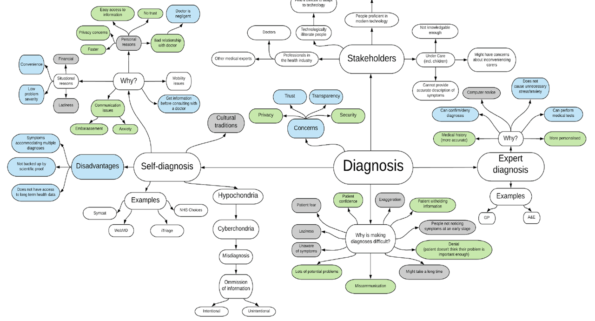
-
Coding is an iterative process:
-
First iteration: Everyone independently codes the transcripts and
identifies key themes in the text
-
Second iteration: Research team comes together and everyone compares
themes
-
Common themes decided upon
-
Themes revised based on commonality among
researchers’ coding
-
Third iteration: Axial Coding - revise themes and finalise code book (a
table / document outlining category findings and such)
Designing for the Web
Motivation
-
When people look at your design, do they want to interact
with it?
-
Your goals for designing should be:
-
Simplicity (should be simple: KISS Keep It Simple, Stupid)
-
Feedback (see what people think)
-
Speed (things you can do on the site should be quick)
-
Ease of use (it should be easy to use)
-
Remember, you shouldn’t have to think to use an
interface; it should be intuitive!
Layout
Above and below the fold
-
This is a technique from newspapers.
-
‘Above the fold’ is everything the user sees
upon entering the site for the first time.
-
Here should be all of the important stuff that users should
see first.
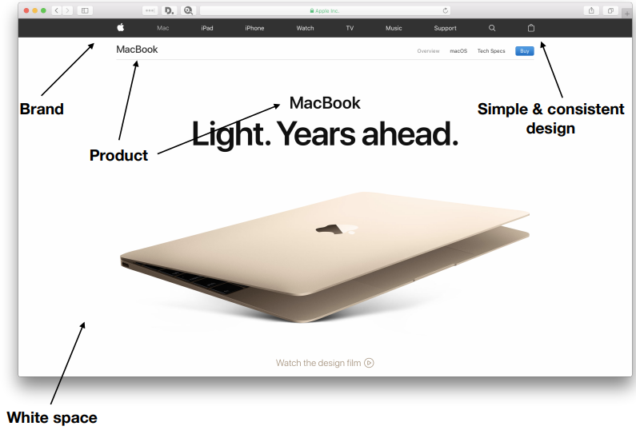
-
‘Below the fold’ is everything the user will
see when they scroll down.
-
Here, more specific details should be available.
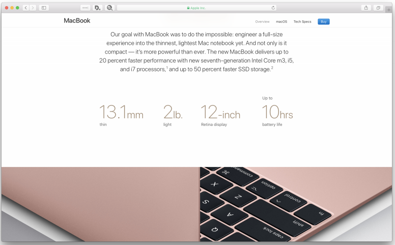
Rule of thirds
-
This technique comes from photography.
-
This technique involves splitting up your screen into
thirds, then placing the subject on one of the splitting
intersections.
-
For example, in this image of a boy, the boy is placed not
in the centre, but on one of the line intersections.
-
The same thing can be applied to web elements, for
example:
Responsive design
-
Responsive design refers to a design that can change shape
according to what device it’s on.
-
It’s one design that changes its shape; not lots of
designs that the website picks from.
Break-point design
-
Lots of designs suited to different devices that the
website picks from, e.g. a desktop design, mobile design,
tablet design etc.
-
The designs do not change shape like responsive design
does, the designs are specialised for different devices and
are picked accordingly.
Semantic web
-
You can add semantics to your website.
-
With HTML5 and schema.org, lots of websites can
semantically include objects in their site that are
recognisable by other services, like Google.
-
By adding semantics to websites, it makes it easier for
machines to understand what they’re about.
-
IMDb is an example of a website that uses semantics.
Web page elements
-
Fonting is important as it can direct attention, complement the
layout and tell you what the text is about before you read
it (e.g. bold text indicates a title).
-
Use appropriate words according to what your site is about. There’s
no use using weird jargon where it’s not
necessary!
-
Colours have strong meaning and can indicate common
conventions, for example ‘red’ may mean to close
something down.
Interaction
-
What type of feedback does your website give? Video?
Audio?
-
What type of feedback should it give? Which is the most
appropriate for your site?
-
If you need to deliver content to the user after the page has been loaded, consider using AJAX (Asynchronous JavaScript and XML).
Metaphors, Models & Assumptions
-
Sometimes, we make stupid assumptions, like assuming that
people want to watch TV while driving.
-
How do we stop making stupid assumptions? Make a conceptual
model!
Conceptual models
-
A Conceptual Model is an account of how a system
works.
-
Why do we do this?
-
Orientate
-
Allow the design team to ask specific questions
-
Prevent a design team becoming too narrowly focused early
on
-
Agree a set of common terms within the team
-
It allows us to rail ourselves onto the right thought track
before we jump into anything.
-
The components of a conceptual model are:
-
understand what a product is for and how to use it for an
activity
-
Concepts that people are exposed to through the
product
-
task–domain objects, their attributes, and operations
(e.g. saving, revisiting, organizing)
-
Relationships and mappings between these concepts
-
The first steps of creating a conceptual model would
be:
-
What will the users be doing when carrying out their
tasks?
-
How will the system support these?
-
What kind of interface metaphor, if any, will be
appropriate?
-
What kinds of interaction modes and styles to use?
Interface metaphors
-
An interface metaphor conceptualises the task in a way
people can understand.
-
For example, a shopping trolley icon alone conveys
conventions such as adding items, going to a checkout,
purchasing the items in your trolley etc.
-
This makes learning the system easier and more accessible
for other people, but it can break conventional and cultural
rules.
Material metaphors
-
A material metaphor does not conceptualise a
‘task’, but instead draws parallels between your
interface and real life material objects.
-
For example, the ‘card’ component in Material
Design makes you think of a surface of paper:
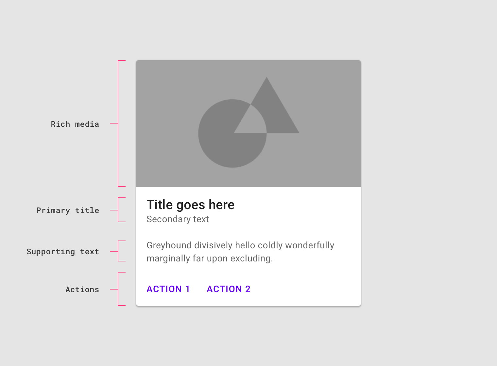
Interaction types
-
How do you interact with a system?
Instructing
-
You can just tell it what to do using instructions. You
know, with a terminal and stuff.
-
It’s quick and efficient, but some interfaces are
harder than others!
Conversing
-
Just talking to the system in English.
-
It can make novice users feel at ease, but it can break
down if it cannot parse the input sentence.
Direct manipulation
-
Dragging, selecting, opening, closing, zooming virtual
objects
-
Novices can learn how to interact very quickly, but you
can’t apply this to everything
Interface type
-
Interaction type: Conceptually, the way that concepts and commands are
represented.
-
Interface type: The concrete means of facilitating the interaction, e.g.
speech, menus, buttons
Prototyping
What is a prototype?
-
Anything that demonstrates how the final product is going
to work / be used
- Examples:
-
a series of screen sketches
-
a storyboard, i.e. a cartoon-like series of scenes
-
a wireframe / mockup
-
a video simulating the use of a system
-
chopsticks and rubber bands
-
a piece of software with limited functionality written in
the target language or in another language
-
It should NOT be finished.
-
Try not to make a design that will SOLVE ALL THE
PROBLEMS
-
A prototype should aim to address one specific aspect; one
specific problem within the whole. Make it manageable:
-
Good: A technology persuading you to take the stairs not
the elevator, that talks to your fitbit and smartwatch
-
Bad: An ‘all round health app’ used for
tracking running, walking, dieting, tracking progress,
calorie counting and making you healthy
-
Prototypes should be evocative, imaginative, malleable, but
practical
Why do we prototype?
-
Evaluation and feedback are central to interaction
design
-
Stakeholders can see, hold, interact with a prototype more
easily than a document or a drawing
-
Team members can communicate effectively
-
You can test out ideas for yourself
-
It encourages reflection: very important aspect of design
-
Prototypes answer questions, and support designers in
choosing between alternatives
-
It’s much easier to change a prototype than a final
design
What to look out for in prototyping
-
You need to prototype the interaction and experience, not
just the interface.
-
If it seems like they’re having trouble performing a
basic function, maybe you should redesign your
prototype.
-
The interface could be just fine, but there may be other
problems, e.g. the user might think the visual design is too
basic etc.
Low vs high fidelity prototyping
Low fidelity
-
Uses a medium which is unlike the final medium, e.g. paper,
cardboard
-
Is quick, cheap and easily changed
- Examples:
-
sketches of screens, task sequences, etc
-
‘post-it’ notes
- storyboards
-
‘Wizard-of-Oz’
-
Another example is a storyboard.
-
Often used with scenarios, bringing more detail, and a
chance to role play.
-
It is a series of sketches showing how a user might
progress through a task using the device.
-
Used early in design.
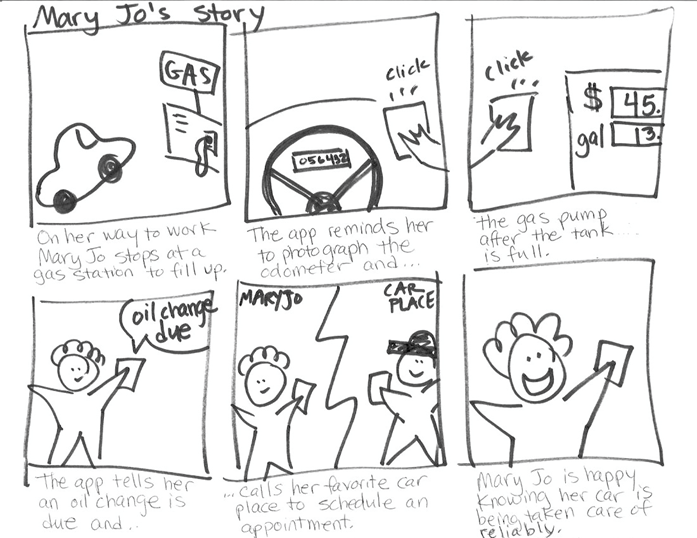
-
The ‘Wizard-of-Oz’ prototype involves a hidden
person pretending to be a computer, changing the fake system
for the user to interact with.
-
The “facilitator” provides the tasks, instructs the participants and
takes notes
-
The “wizard” is a hidden human who operates the interface
-
User feedback = think aloud, retrospective or heuristic
evaluation
-
Here’s an example of a wireframe prototype made in
Balsamiq:
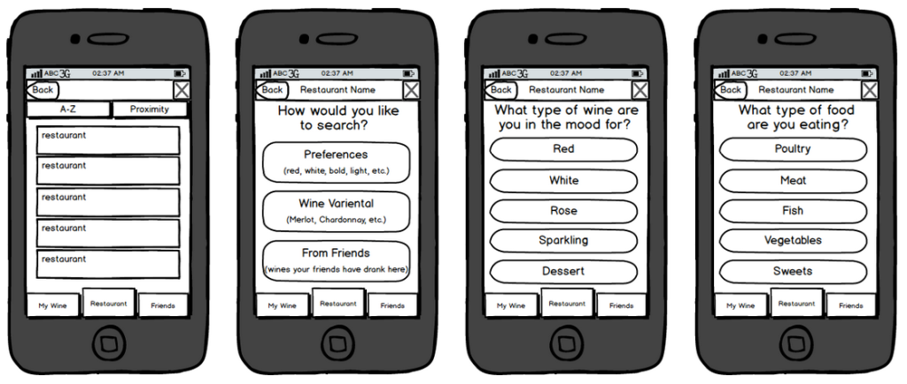
-
Advantages of low-fidelity:
-
Faster to iterate, also cheaper than fully functional
prototypes
-
Creating multiple variations = easy
-
User-centred development
-
Feedback about a design straight away
-
Disadvantages of low-fidelity:
-
Easy to get over-commit for tech in the design (i.e.
technologies which are impossible to design)
-
Cannot simulate all system features
High fidelity
-
Uses materials that you would expect to be in the final
product
-
Prototype looks more like the final system than a
low-fidelity version
-
High-fidelity prototypes can be developed by integrating
existing hardware and software components
-
Danger that users think they have a complete system and are
less likely to give you useful input
Low vs High
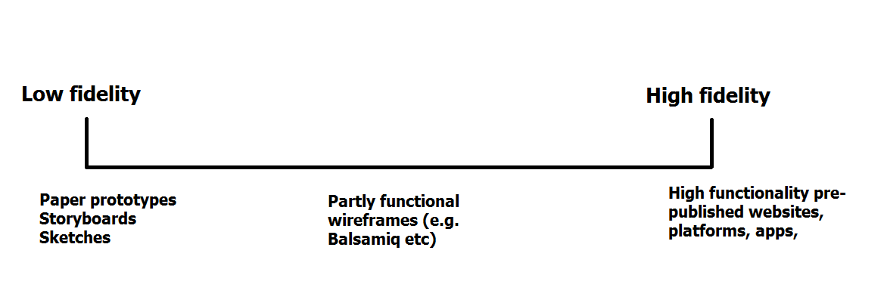
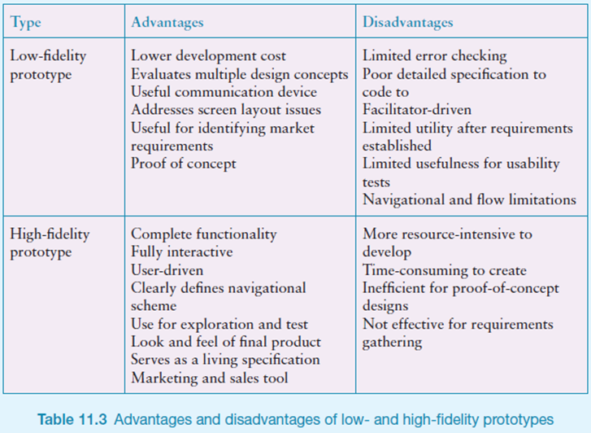
Personas
-
Personas are characteristics that capture a certain group
of people.
-
They’re not hypothetical people, but they represent a
group of real people.
-
They have backgrounds, needs and frustrations that need to
be solved.
-
Take Ginnie, for example:
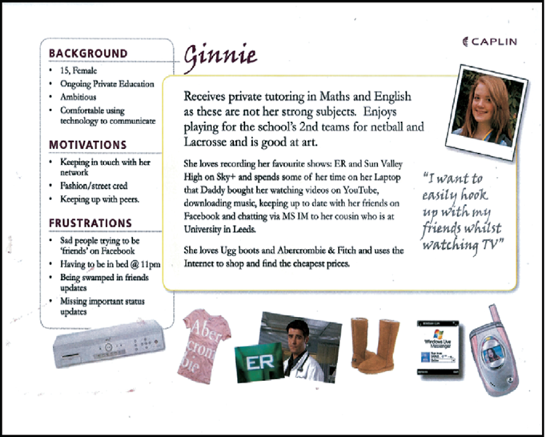
Accessibility
-
Accessibility is all about who can use your products.
-
This includes disabled people, people who can’t see
very well, people who can’t read very well etc.
-
There are lots of assistive technologies for this:
-
enlarging software
-
speech recognition
-
synthetic speech readback
-
refreshable braille display
-
scanner/OCR system
-
alternative keyboards
-
ergonomic, one handed, large, small, switch scanning,
on-screen
-
alternative ‘pointing’ devices
-
programmable or left handed mice, joysticks, trackballs,
trackpads, eye & headpointing systems
-
Tips to make websites more accessible:
-
Images & animations: “alt” attribute to describe function
-
Multimedia: captions and descriptions of video.
-
Hypertext links: text that makes sense: avoid "click here."
-
Page organisation: headings, lists, CSS
-
Graphs & charts: Summarize
-
Tables: Make line-by-line reading sensible.
Terminology
-
What’s the difference?
-
Impairment:
-
physical/sensory/cognitive
-
Effect of impairment on abilities
-
Person with a disability
-
By society ? (social model)
-
Disabled person
Why should I care
-
You could become disabled! What will you do then?
You’ll have to implement assistive features to your
products so that you can use them!
-
It’s also a morality thing; it’s a good thing
to do (or at least, it makes you look good).
-
Economics? I don’t know, it was on the slides. (Maybe larger customer base?)
-
Legislation. That’s right; it’s illegal for you
not to do it.
-
Well, it’s illegal for you to refuse...
-
It’s called the Disability Discrimination Act (DDA),
and is now a part of the 2010 equality act.
Who else benefits
-
This stuff also comes under aiding users using:
-
mobile devices
-
search engines
Ordinary people
-
Sometimes it’s not someone with a broken leg, but
it’s someone who’s never used a computer before,
or someone who has really slow internet.
-
So if you design for ‘extra-ordinary’ people in
ordinary situations, you can help ordinary people in
‘extra-ordinary’ situations.
STREET
-
There’s this thing you can use called STREET.
-
Don’t think disability; think STREET!
-
Use this chart to pick the best design for your
users!
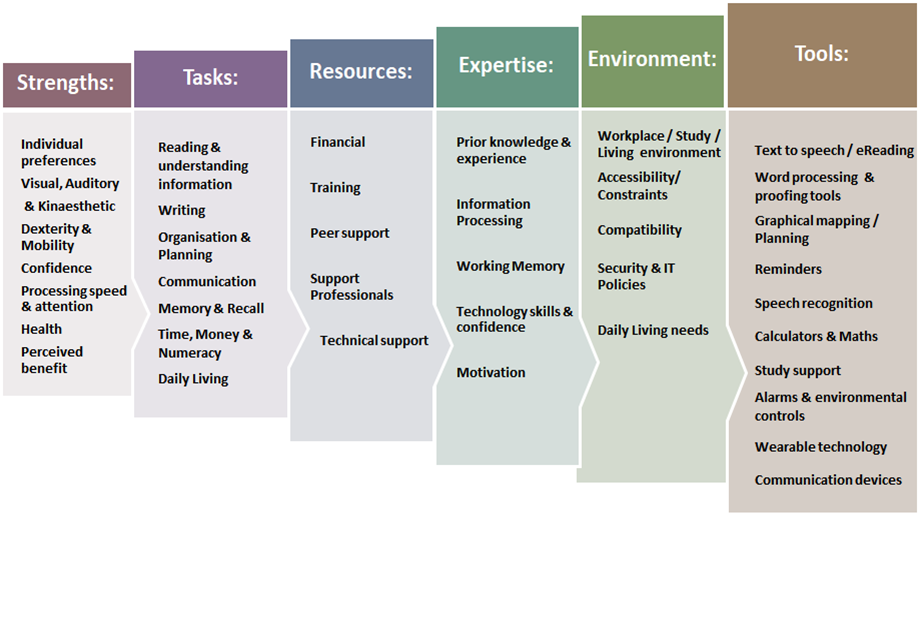
-
If you’re struggling for ideas, check out what other
people have done; have a look at that accessibility folder
for your OS that you never go on! (e.g. Ease of Access
Center, mouse pointer options, high contrast mode
etc.)
Scenarios and personas
-
Scenarios are stories describing a product achieving a specific
goal.
-
In this context, a persona is a character whom the story is about.
-
These personas and scenarios can help with user centred
design methodology, and help developers and designers notice
things they wouldn’t otherwise notice.
-
Remember, they shouldn’t be too personal or thought
of as real people; that would scope the thought track and do
more harm than good.
Cognition
-
Cognition involves what the user is capable and not capable
of doing.
-
It also goes into detail about what goes on in the
user’s mind when using your product.
Cognition
Attention
-
Attention means selecting things to concentrate on at a
point in time from the mass of stimuli around us
-
Nobody likes cluttered text. Keep things orderly and
structured, so that attention is distributed in the correct
order and is efficient in terms of information gain.
Perception
-
How people process the information they’re looking
at.
-
Weller (2004) found people took less time to locate items
for information that was grouped, using whitespace and
borders and stuff.
-
Your designs should be as follows:
-
Icons should enable users to readily distinguish their
meaning
-
Bordering and spacing are effective visual ways of grouping
information
-
Sounds should be audible and distinguishable
-
Speech output should enable users to distinguish between the set of
spoken words
-
Text should be legible and distinguishable from the
background
-
Tactile feedback should allow users to recognize and distinguish
different meanings
Memory
-
Can users remember how to use your product?
-
George Miller’s (1956) theory of how much information
people can remember states that people can remember around
5-9 things at a time, in other words, 7 ± 2.
-
Therefore designers tend to:
-
Present only 7 options on a menu
-
Display only 7 icons on a tool bar
-
Have no more than 7 bullets in a list
-
Place only 7 items on a pull down menu
-
Place only 7 tabs on the top of a website page
-
Don’t overload users’ memories with complicated
procedures for carrying out tasks
-
Design interfaces that promote recognition rather than
recall
-
Provide users with various ways of encoding information to
help them remember
-
e.g. categories, colour, flagging, time stamping
Learning
-
People find it harder to learn by reading; they prefer to
learn by doing
-
Design interfaces that encourage exploration
-
Design interfaces that constrain and guide learners
-
Dynamically linking concepts and representations can
facilitate the learning of complex material
Communicative
-
These are the main ways people get information from a
screen.
-
Speech-based menus and instructions should be short
-
Heighten the pitch change of artificially generated speech voices
(they are harder to understand than human voices)
-
Provide opportunities for making text large on a
screen
Problem-solving, planning, reasoning and decision-making
product.
-
All are reasoning tasks involving reflective
cognition
-
e.g. thinking about what to do, what the options are, and
the consequences
-
Often involves conscious processes, discussion with others
(or oneself), and the use of artefacts
-
e.g. maps, books, pen and paper
-
May involve working through different scenarios and
deciding which is the best option
Theoretical frameworks
-
We create theoretical frameworks to get a better
understanding of how users use our system, how they learn
etc.
-
There’s plenty of different kinds of approaches to
this:
Information Processor Model
-
Splits up human performance into
‘stages’.
-
You can use this to identify what processes are running
through the user’s mind when performing a task.
-
You can also use this to calculate how long a user will
take to react to something.
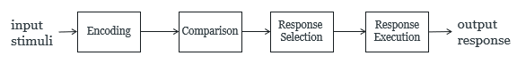
Distributed cognition
-
You don’t remember everything, do you?
-
You look stuff up. Don’t lie!
-
This is what this theory is about.
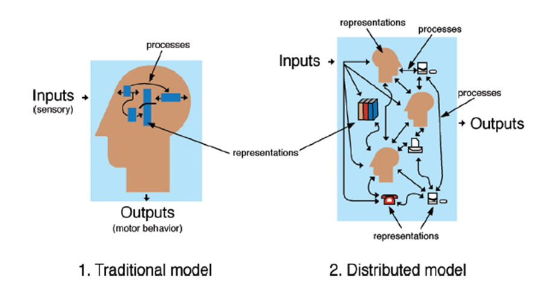
-
People get information from various sources, called
‘artefacts’.
External cognition
-
Concerned with explaining how we interact with external
representations (e.g. maps, notes, diagrams)
-
What are the cognitive benefits and what processes
involved
-
How they extend our cognition
-
What computer-based representations can we develop to help
even more?
-
Diaries, reminders, calendars, notes, shopping lists, to-do
lists
-
written to remind us of what to do
-
Post-its, piles, marked emails
-
where placed indicates priority of what to do
-
External representations:
-
Remind us that we need to do something (e.g. to buy
something for mother’s day)
-
Remind us of what to do (e.g. buy a card)
-
Remind us when to do something (e.g. send a card by a
certain date)
Evaluation
-
How do we know if what we made is good enough?
-
I’ll tell you how: we evaluate it!
Inspections
-
What better way to test a product than to use it yourself get experts to do it for you?
Heuristic evaluation
-
Heuristic evaluation is a type of inspection.
-
It’s where you test your product against a list of
heuristics.
-
There are two kinds:
-
Shneiderman’s 8 Golden Rules:
-
Strive for Consistency
-
Enable frequent users to use shortcuts
-
Offer informative feedback
-
Design dialog to yield closure
-
Offer simple error handling
-
Permit easy reversal of actions
-
Support internal locus of control
-
Reduce short-term memory load
-
Visibility of system status
-
Match between system and the real world
-
User control and freedom (undo)
-
Consistency and Standards (conventions)
-
Error prevention (eliminate error-prone conditions, get
confirmation)
-
Recognition rather than recall
-
Flexibility and efficiency of use
-
Aesthetic and minimalist design
-
Help users recognize, diagnose and recover from
errors
-
Help and documentation (easy to search, focussed on task,
concrete)
-
Tell your experts what to do
-
Spend 1-2 hours using the product
-
Discuss findings, compare notes, prioritise issues and
discuss solutions
-
You would usually use heuristic evaluation when
you’re low on budget and have no time.
Predictive methods
-
Or, you can use predictive methods. One of which is Fitt’s Law.
-
The average time taken to click something is proportional
to the distance from
the target, divided by the size: ∝ D/S
-
Basically, it means a button is easier to click if it’s bigger and closer
to the cursor.
Experiments + Statistics 101
-
You can also evaluate your product through
experiments.
-
Experiments allow you to predict the relationship between
two or more variables.
-
For example, you could test how likely people are willing
to sign up if the register button is red.
-
Remember, correlation does not imply causation!
-
When designing experiments, there are three approaches:
Between-subject design
-
Different people test each condition, so that each person
is only exposed to a single user interface.
-
For example, if we wanted to compare two car-rental sites A
and B, each participant could test a single car-rental site
and book a car only on that site.
Within subjects design
-
The same person tests all the conditions (i.e., all the
user interfaces).
-
For example, if we wanted to compare two car-rental sites A
and B, Each participant could test both car-rental sites and
book a car on each.
-
Here’s a really nice picture demonstrating the
difference between between-subject and within-subject:
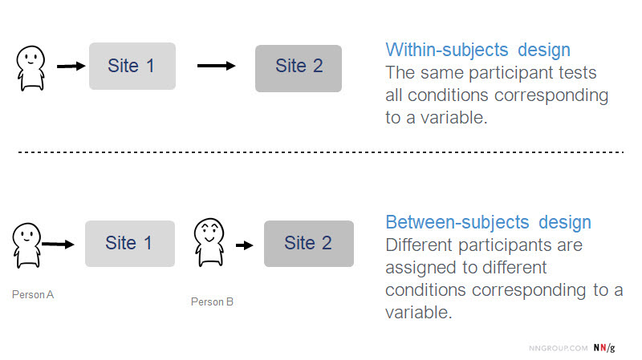
Pair-wise design
-
Participants are matched up in pairs, usually based on
expertise, gender etc.
Types of evaluation
Controlled settings involving users
-
This involves usability testing, experiments in
laboratories and living labs.
-
Basically, drag in some users and get them to use your
product.
-
Test conditions should be the same for each user.
-
For example, give the user a list of things to do with your
product, and log what they do / how they approach the task
etc.
-
Time to complete a task
-
Time to complete a task after a specified time away from
the product
-
Number and type of errors per task
-
Number of errors per unit of time
-
Number of times online help and manuals accessed
-
Number of users making an error
-
Number of users successfully completing a task
-
Methods of Logging could be:
-
Verbal Protocol: User speaks their thought processes aloud,
and is encouraged to criticise the system.
-
Easy for the evaluator to read.
-
Provides unconsidered thoughts and criticisms.
-
Software Logging: Automated logging of user actions
-
Interaction Logging, Click-Tracking, Time-Stamped Key
Presses
-
Easy for the evaluator
-
Data is accurate and quantitative
-
Beware of the Hawthorne Effect!
-
People act differently when they’re being
watched.
-
Therefore, field study may be more appropriate.
Natural settings involving users
-
This involves field studies and in-the-wild studies to see
how the product is used in the real world.
-
Basically, get a user to use your product in the real world
instead of a weird room with weird people looking at them
weirdly and writing weird things down.
-
You can notice things that you wouldn’t notice in
controlled settings.
-
For example, let’s say you designed this strange
white thing.
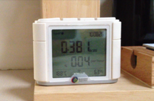
-
Would you have known that users would hide it behind
stuff?
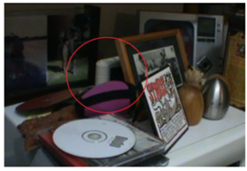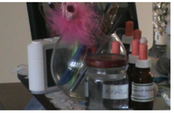
-
You wouldn’t know that unless you used natural
settings for your evaluations.
-
Also, don’t walk up to them with a clipboard and a
lab coat. Just throw on your shirt and jeans and talk to
them informally; it’ll feel more natural (unless they
grew up in a lab).
Settings not involving users
-
Cognitive Walkthrough is an example. It focuses on the ease
of learning for the user.
-
Cognitive Walkthrough uses experts - not users. It’s
like Inspections.
-
Experts work through a series of tasks to understand the
user process.
-
Experts also ask questions about the user and the
design.
-
Will the user have sufficient evidence to make the correct
action?
-
Pros of Cognitive Walkthrough: Quick usability testing,
testing improvements of an existing product
-
Cons of Cognitive Walkthrough: Uses experts - they may be
hard to find, or expensive.
-
Also involves methods like unit testing and heuristic
evaluation.
Values & Value Sensitive Design
-
Values refers to everything that we care about.
-
So what do we care about?
- Family?
- Friends?
- Money?
-
The release of Kingdom Hearts 3 on 25th January 2019?
-
JoJo’s Bizarre Adventure?
-
Sword Art Online? (jk nobody cares about that)
-
Basically, everyone has values.
-
Remember, values are not the same as needs.
-
Needs are things that all animals require, like food,
water, shelter, sex (except if you’re a Computer
Science student)
-
Values are things we like but don’t need to
survive.
Types of values
-
There are two types of values: universal and cultural.
-
Universal values are values that everyone usually has, like
Achievement, Tradition, Conformity etc.
-
Cultural values are values localised within a culture, e.g.
Spirituality and Democracy.
-
There are values that are a lot more closely entwined to Computer Science, like Health and Intimacy vs
Security and Privacy.
Why consider values
-
For the same reason why people use DuckDuckGo instead of
Google.
-
If you don’t consider values, you’ll miss what
people really want.(like Sonic Team)
-
Values can also teach you about why people want to use your
product.
-
Motivational values are known to the user and are the reason why they do
things, e.g. people cycle because it’s good for their
health.
-
There are other values that may be less obvious, e.g.
people cycle and discover that it offers a new social
opportunity.
Research & Design Ethics
-
Is what you’re doing ethically right or wrong?
Milgram experiment: The Zapping Experiment
-
Basically people were pretended to be zapped, and people
got upset and scientists studied it.
-
But they made people so upset that they established ethical
bodies to stop people from doing this again.
ACM Code of Ethics and Professional Conduct
-
Here is a code of ethics. Follow these or get in
trouble!
1.1 Contribute to society and human well-being.
1.2 Avoid harm to others.
1.3 Be honest and trustworthy.
1.4 Be fair and take action not to discriminate.
1.5 Honor property rights including copyrights and patent.
1.6 Give proper credit for intellectual property.
1.7 Respect the privacy of others.
1.8 Honour confidentiality.
2.1 Strive for quality, effectiveness and dignity at work.
2.2 Acquire and maintain professional competence.
2.3 Respect existing laws pertaining to professional work.
2.4 Accept and provide appropriate professional review.
2.5 Evaluate computer systems and their impacts and risks.
2.6 Honor contracts, agreements, and responsibilities.
2.7 Improve public view of computing and its consequences.
2.8 Access computing and resources only when authorized
3.1 Articulate social responsibilities of colleagues and
encourage full acceptance of those responsibilities.
3.2 Manage resources to design and build systems that enhance
the quality of working life.
3.3 Support good use of computing & communication
resources.
3.4 Ensure that users have their needs assessed during the
design of requirements; and that the system is validated to meet
these.
3.5 Support policies that protect the dignity of users and
others
3.6 Create opportunities for members of the organization to
learn the principles and limitations of computer systems.
Ethics in Interaction Design
Avoiding bias
-
Order & Instructions
-
Within-groups comparative studies: counterbalanced
order
-
Possible? Not always or not easily
-
Mood factors (e.g. weather & mood)
-
Reward consistently before or after (give people chocolate
to set them in a good mood)
-
Experimenter attitude (even unconscious)
-
Experimenter blind to hypothesis
-
Written instructions
Recruiting participants
-
You should recruit participants where your target audience
is.
-
It should be very general, so no cherry-picking!
-
To motivate participants, give them chocolate or
something.
-
Make sure motivation is consistent and valid.
-
How do you recruit participants?
-
Generic adverts
-
Generic + screening or group assignment
-
Snowball sampling: word of mouth based on criteria
Presenting findings
-
Only make claims that your data can support!
-
Use graphical representations, like graphs and stuff.
Ethics in FEPS (ERGO2)
-
What’s FEPS and ERGO2?
-
FEPS stands for Faculty of Engineering and Physical
Sciences
-
ERGO2 is a submission system used to hand in questionnaires
and stuff.
-
First of all, the ethical body looks at the application
form and checks if everything is alright.
-
It identifies the participants and what the participants
will go through.
-
Then, they identify what group the participants are from
and what the relation is between investigator and
participant.
-
After that, they find out how the participants will be approached and how you will obtain the information needed to
approach them.
-
Following that, they find out how the participants are selected.
-
Afterwards, they find out when and how participants will be
given Participant Information:
-
indicates how long participants have to decide whether to
take part;
-
indicates how informed consent will be obtained;
-
indicates when and how participants are accepted into the
study.
-
Participant information and consent are then
analysed.
-
What happens during the study is also considered.
It’s split up into three categories, defined by
severity:
-
L - Low risk
-
The one funding this study is a commercial
organisation.
-
There’s restrictions on the study, like publication
restrictions
-
Participants are accessed through a proxy (e.g. students
through a school, patients through a hospital etc.)
-
Not all data is anonymous
-
The participant is induced (persuaded)
-
The study is intrusive
-
There is some risk of harm
-
The true purpose of the study isn’t told to all
participants, so they are being deceived.
-
Participants may be minors or otherwise have diminished
capacity to provide informed consent.
-
Sensitive data is collected / processed.
-
Invasive equipment, material(s), or process(es) are
involved
-
Some participants are unable to withdraw at any time and
for any reason while retaining their inducement (if
any)
-
Animals are involved
-
Human tissue is involved
-
Biological samples are involved
Participatory Design
-
Users are not developers / designers; they can’t
articulate exactly what they want.
-
Users don’t know what they want, but they’re
the best we have.
-
Why not just include them in the design process?
-
That’s what participatory design is!
-
Interviews, focus groups, prototyping (low fidelity and
high fidelity prototypes)
-
Gives people a genuine “say”. Not just
consultation, but active participation in the design
process.
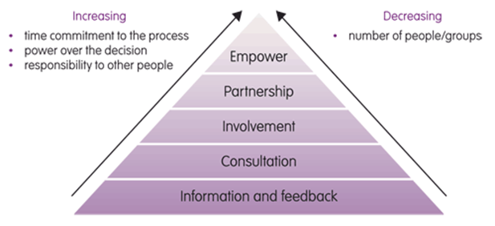
-
The benefits of participatory design are:
-
You don’t waste time implementing something the user
didn’t mean
-
You’re more likely to create something the user will
need more
Persuasive Design & Behaviour
-
This topic is all about behaviour change theory and how people
act.
-
For example, stopping someone from smoking, enforcing
better eating habits etc.
-
In this topic, we’re going to learn how to create an
‘intervention method’.
-
An ‘intervention method’ is a way of stopping /
enforcing a behaviour / habit within someone.
-
There are 5 steps of intervention development:
Step 1: Behaviour identification
-
Identify your behaviour(s) and your target group.
-
Be specific: Do you want to encourage a behaviour (better eating habits) or stop one (stop smoking)?
-
Be targeted: The things that may influence one group may not influence
another (in other words, have a target audience)
Step 2: Change identification
-
Identify what needs to change for your behaviour to occur
or stop.
-
What do you actually need to change?
-
There are behaviour change theories to help you locate
this.
-
One of which is the COM-B system:
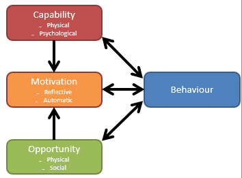
-
Capability: People must have the physical strength, knowledge,
skills, stamina etc. to perform the behaviour
-
Motivation: People must be more highly motivated to do the behaviour
at the relevant time than not to do the behaviour, or to
engage in a competing behaviour
-
Opportunity: People must have a conducive physical and social
environment: e.g. it must be physically accessible,
affordable, socially acceptable and there must be sufficient
time
-
How do you identify what needs to change so you can make a
COM-B model?
-
Interviews or focus groups (qualitative):
-
Ask open questions about behaviour: “Tell me about
when you last tried to give up smoking? What things make it
easier/harder to stop smoking?”
-
Self-report questionnaires (quantitative):
-
COM-B Self Evaluation Questionnaire (Michie et al. 2014b)
– circle things that it would take for them to do the
behaviour (e.g ‘have more time to do it’)
-
Review the literature (systematic review, scoping review) on influences on
behaviour
Step 3: Intervention content identification
-
Identify intervention content.
-
How are you going to change things?
-
There are two ways to think of this:
Behaviour Change Techniques
-
There are plenty of techniques:
-
Knowledge and skills (fulfils Capability)
-
Pros/cons, rewards and punishments (fulfils
Motivation)
-
Physical & social environment (fulfils
Opportunity)
-
Self-monitoring of behaviour and outcome (like an app that
tells you how much weight you’ve lost)
-
Stories and quotes
Implementation intention
-
This one is a bit more explicit.
-
Basically, you list a ‘goal’ along with an
‘implementation intention’.
-
The ‘goal’ is what you want to achieve, and the
‘implementation intention’ is how you want to
achieve it.
-
Here’s a stupid example:
-
Goal: I want to stop smoking
-
Implementation intention: If I feel like smoking, I’ll remember how I
won’t be able to watch my kids graduate if I continue
smoking and die of lung cancer.
Step 4: Understanding perspective
-
Understand and accommodate the perspective of your target
users (the Person-Based Approach to intervention
development)
-
You know what you want to do; now it’s time to make
it a bit more personal.
-
Carry out iterative qualitative research with a wide range
of people from the target user populations
-
Identify ‘guiding principles’ that inform
intervention development to meet needs.
-
Basically, talk to your target audience!
-
Refine your methods to be more personal to your target
audience.
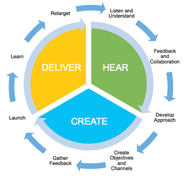
-
This helps the developer to:
-
Select theory and evidence-based techniques that are most
acceptable, salient, feasible for target population
-
Avoid or modify intervention characteristics that are
disliked, impractical, intrusive
-
Suggest the need for new intervention characteristics,
hence not yet evidence-based
Step 5: Evaluation
- Evaluate it!
-
How do you evaluate it?
-
Randomised controlled trials, that’s how!
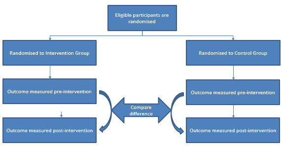
-
So what happens in a randomised controlled trial?
-
Use a control group (e.g. usual care, no intervention, another
intervention) – to prove the changes are down to the
intervention and not due to chance
-
Treat both groups the same – so you know any changes are down to the
intervention, not any other differences
-
Randomisation – to ensure that participants have an equal chance of
being allocated to either group
-
Measure outcomes before and after the intervention - to show changes are down to the intervention
-
Blinding of participants and assessors of outcome – to avoid their knowledge of allocation from
biasing their results (e.g. by using a placebo)
-
However, this can be difficult in behaviour change
interventions
-
Using a ‘minimum credible intervention’ (e.g.
brief advice) can overcome this
-
Through this, we measure health outcomes, behaviour
outcomes etc.
-
We can also measure how effective our intervention method
is.
TL;DR
-
Welcome to the TL;DR section, where you get more
information for less effort!
-
Remember, this is all a summary to jog your memory.
-
I suggest you scroll up and read the real notes at least
once. Please don’t rely solely on the TL;DR section
for the exam (or do; it’s up to you)!
HCI theory
-
Interaction with technology => we interact directly with the technology
by doing some physical action.
-
Interaction through technology => we use the technology as a tool to
communicate with some other person/service.
-
Scope your interface on different areas of the
system:
- Hardware
-
Programming task
- Terminal
-
Interaction dialogue
-
Work setting
-
Three theories for designing an interface:
-
Classical (psychology and predictive methods)
-
Modern (using analytic tools)
-
Contemporary (like modern, but uses culture)
-
Affordances are uses / services that are offered by the
system.
- Types:
-
Instrumental
- Handling
- Effecter
- Aggregation
- Learning
- Maintenance
-
Norman Model of Interaction:
-
Execution: doing actions, changing the state of the system,
establishing the goal
-
Evaluation: what the system state means to the user
-
Situated actions: people do things because of the context they’re
in.
-
Ortony’s model of emotional design:
-
Visceral: feel / sound / look good
-
Behavioural: intuitiveness, like buttons, check boxes, switches
etc.
-
Reflective: high-level things that people have to figure out a little,
like a light in the sky that shows the amount of pollution emitted
-
Distributed cognition means that people use other resources to do things;
it’s not just what they remember. Those things are
“artefacts” and it all forms one big
“cognition”.
-
Fogg’s behaviour model:
-
Motivation, ability and trigger are factors of whether behaviour occurs.
Data Gathering
- Interviews
-
Questionnaires
-
Observations
-
Cultural probes
-
Literature reviews
-
Research questions are questions like “What do people
understand about their
home energy use?”
-
Instrument questions are questions like “What are some
things you know about “energy use””?
-
Key steps in data gathering:
-
Setting goals
-
Identify participants
-
Engage participants
-
Qualitative research => breadth of experience
-
Quantitative research => representative of population of interest
- Stratified
- Random
- Breadth
- Convenience
- Snowball
-
Pilot study: small study that you do before main study.
-
Triangulation: combining data from different data gathering
methods.
-
Unstructured - No script
-
Structured - Stick to the script
-
Semi-structured - Loosely stick to the script
-
Focus group - Group interview
-
Closed - discrete set of possible answers
-
Open - answer with a sentence
-
long questions
- jargon
-
leading questions
- assumptions
-
basically, be professional and don’t be stupid
-
Usual structure of an interview:
- Intro
- Warm up
- Main body
- Cool off
- Closure
-
When doing questionnaires:
-
Make purpose clear
-
Promise anonymity if you can
-
Offer short version
-
Include return envelope (for offline questionnaires)
-
Provide incentive
-
Observation: where you go to a place to observe a working
system
- Two types:
-
Direct => directly observe what’s going on
-
Indirect => web analytics, click tracking, screen recorder
etc.
-
Think-aloud => Ask someone to explain what they’re doing
while they’re using a system
-
Wizard-of-Oz => Someone uses a prototype system, but someone
else is controlling it
-
Speculative design => Propose possible design options to people to
prompt discussion
-
Experiments: test a hypothesis by doing something
Data Analysis
-
There are 5 measures of quantitative data:
- Mean
- Median
- Mode
- Range
-
Standard deviation
- Line charts
- Bar charts
-
Frequency graphs
-
Coding: labelling parts of qualitative data
Usability, UX and Accessibility
-
Usability: how easy the user interfaces are to use
-
UX (User Experience): encompasses all interactions of the end user with the company, services and products.
-
Accessibility: usability of a product or service by people with the
widest range of capabilities
-
Abide by these four principles:
- Equitable
- Flexible
-
Simple and intuitive
-
Perceptible information
-
Tolerance for error
-
Low physical effort
Interfaces
- Comfort
- Hygiene
-
Ease of wear
- Usability
- Web
- Speech
-
Pen, gesture, touch
- Mobile
- Wearable
- Shareable
-
Virtual, augmented & mixed reality
- Robotics
Qualitative Methods
-
Contextual inquiry: establishing the context of your product
-
How to perform contextual inquiry:
- Interviews
- Ethnography
-
Direct observation
-
Diary studies
-
Cultural probes + technology probes
Qualitative Analysis
-
Traditional experimental theory: existing theory explains someone’s behaviour
-
Grounded theory: come up with your own theory for why someone does
something
-
Thematic analysis: an approach to grounded theory, also called coding
-
Open coding: Identify categories and colour code
-
Axial coding: Draw out conclusions and link behaviours together
-
Iterative process of coding:
-
Everyone independently codes the transcripts
-
Everyone comes together and compares themes
-
Do axial coding as a group
Designing for the Web
-
KISS: Keep It Simple, Stupid
- Simplicity
- Feedback
- Speed
- Ease of use
-
Above and below the fold:
-
Above: What you first see
-
Below: What you see when you scroll down
-
Rule of thirds: split your screen into thirds and position your elements
along the lines / on the intersections
-
Responsive design: design changes shape
-
Break-point design: design is picked according to device
-
Add semantics to your site so services like Google know
what your pages are about
-
Web page elements to pick carefully and meaningfully:
-
What type of feedback is most appropriate for your
website?
- Video?
- Audio?
- Plain text?
-
Use AJAX to deliver content asynchronously.
Metaphors, Models & Assumptions
-
Conceptual model: an account of how a system works
- Orientate
- Open-mind
-
Common ground
-
Components of a conceptual model:
-
Metaphors and analogies
-
Concepts that people are exposed to
-
Relationships and mappings between concepts
-
Interface metaphors: conceptualises a task so people can understand
-
Material metaphors: draws parallels between interface and IRL objects
-
Interaction type: how do you interact with the system?
-
Interface type: concrete means of facilitating the interaction
Prototyping
-
Prototype: unfinished product that shows how the final product will
work
-
We do this for feedback and evaluation
-
Low fidelity: quick, cheap and easily changed; lower level
-
High fidelity: looks more like final system; higher level
-
Persona: characteristics of a certain group of people
Accessibility
-
Accessibility: who can use your products?
-
enlarging software
-
speech recognition
-
synthetic speech readback
-
refreshable braille display
-
scanner / OCR system
-
alternative keyboards
-
alternative ‘pointing’ devices
-
Making websites more accessible:
-
Images & animations
- Multimedia
-
Hypertext links
-
Page organisation
-
Graphs & charts
- Tables
-
Impairment: physical / sensory / cognitive
-
Disability: effect of impairment on abilities
-
Disabled: social model
-
Disability Discrimination Act (DDA) says it’s illegal
for you to refuse to offer features to your system for
disabled people.
-
Also think of people who have never used a computer before,
or someone with slow internet.
-
STREET: a chart for picking the best design for users
-
Also can use scenarios and personas to help
Cognition
-
Cognition: involves what the user is capable of doing
-
Attention: keep things orderly and structured
-
Perception: make elements intuitive and use whitespace
-
Memory: don’t put too many items on a menu (put around 7,
give or take 2)
-
Learning: design interfaces that encourage exploration
-
Reading, speaking and listening: keep instructions short
-
Theoretical framework: theories about how users understand systems
-
Information processor model:
-
Distributed cognition: people get information from sources, called
‘artefacts’
-
External cognition: how do we interact with things like maps, notes, diagrams
etc.?
Evaluation
-
Inspections: experts test your product
-
Between-subject
design different people doing different things
-
Within-subject
design same people doing the same things
-
Pair-wise design matching people up based on attributes
-
Heuristic evaluation: a type of inspection where your product is tested against
a list of heuristics
-
Shneiderman’s 8 Golden Rules:
-
Strive for Consistency
-
Enable frequent users to use shortcuts
-
Offer informative feedback
-
Design dialog to yield closure
-
Offer simple error handling
-
Permit easy reversal of actions
-
Support internal locus of control
-
Reduce short-term memory load
-
Visibility of system status
-
Match between system and the real world
-
User control and freedom (undo)
-
Consistency and Standards (conventions)
-
Error prevention (eliminate error-prone conditions, get
confirmation)
-
Recognition rather than recall
-
Flexibility and efficiency of use
-
Aesthetic and minimalist design
-
Help users recognize, diagnose and recover from
errors
-
Help and documentation (easy to search, focused on task,
concrete)
-
Fitt’s Law: a type of predictive method that states that the average
time taken to click something is proportional to the
distance from the target, divided by the size
-
The longer the distance to the target, the longer
it’ll take to click it
-
The bigger the size of the target, the shorter it’ll
take to click it
-
Controlled settings involving users
-
Natural settings involving users
-
Settings not involving users
Values & Value Sensitive Design
-
Value: things we like that are important to us, but don’t need to survive
-
Universal: everyone has them
-
Cultural: localised within your culture
-
Motivational values: values known to the user and are the reason why they do
things
-
Other values: values users might not know until they do things
Research & Design Ethics
-
Milgram experiment: he made people zap other people but they weren’t
really zapped
-
ACM Code of Ethics and Professional Conduct: a list of ethics that one should follow
-
How to apply ethics in Interaction Design:
- Avoid bias
-
Recruit participants in your target audience and no cherry
picking
-
Only make claims that your data can support
-
Restrictions on study
-
Participants are accessed through proxy
-
Funding from commercial organisation
-
Participant is induced
-
Sensitive data is collected / processed and not all of it
is anonymous
-
Generally quite shady
-
Invasive equipment
-
Participants are unable to withdraw
-
Animal / human tissue is involved
-
Very weird and suspicious
Participatory Design
-
Engage users in the design process
Persuasive Design & Behaviour
-
Intervention development: stopping / enforcing a behaviour / habit
-
Steps to intervention development:
-
Behaviour identification
-
Change identification
-
Intervention content identification
-
Understanding perspective
- Evaluation